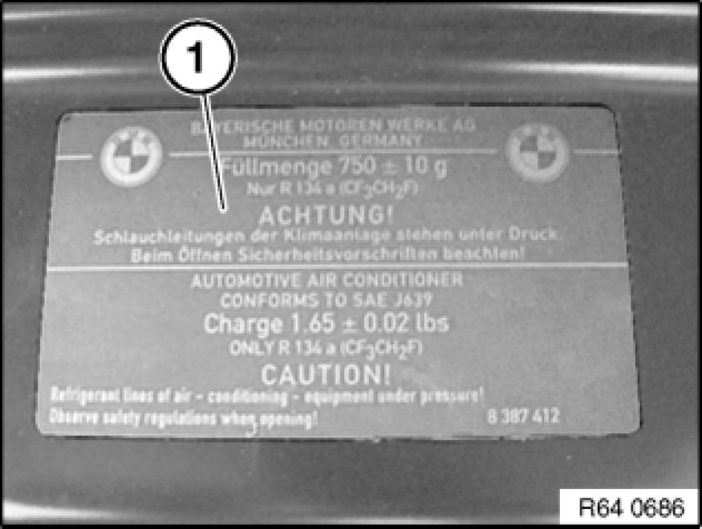

Drawing off, Evacuating and Filling A/C System (R 134a)
64 50 009 - Drawing off, evacuating and filling A/C system (R 134a)

Warning!
Refrigerant circuit is under high pressure!
Repair work may only be carried out on a DEPRESSURIZED refrigerant circuit!
Avoid contact with refrigerant and refrigerant oil.
Follow safety instructions for handling refrigerant R 134a.
Follow safety instructions for handling refrigerant oil Instructions for Handling Refrigerant Oil (for Refrigerant R 134a).

Important!
Risk of damage!
Only BMW-approved R134a refrigerant may be used (refer to sourcing reference: Operating Fluids).
Restart engine only when A/C system has been correctly filled.

Note:
Draw off, evacuate and fill the A/C system in accordance with the operating instructions of the relevant service station.
E60 only:
If necessary, to connect service station, use manufacturer's adapter for high-pressure connection (red).

Instructions for drawing off A/C system:
To help separation of refrigerant and refrigerant oil, run engine at low speed (800-1200 rpm) and with A/C system turned on for a few minutes.
The limits the entrainment of refrigerant oil while it is drawn off.
Drawn-off refrigerant oil must be changed and reintroduced via the service station.
If at the end of the drawing-off procedure the service station moisture indicator shows that the drawn-off refrigerant is excessively moist, clean the refrigerant in accordance with the service station operating instructions.

Recycling:
Dispose of drawn-off refrigerant oil as hazardous waste.
Observe country-specific waste-disposal regulations.
Instructions for evacuating off A/C system:
The evacuation procedure removes all traces of ambient air, water vapor and any other gases present from the A/C system. This enables subsequent system filling with refrigerant.
A decrease in the vacuum level indicates a leak in the refrigerant circuit Leak Testing with Ultraviolet Additives (UV Additives) (BMW Leak-Testing Case).

Instructions for filling A/C system:
Before filling with refrigerant, top up the refrigerant oil entrained during drawing off.
Follow instructions for opening and replacing parts Removal and Replacement in refrigerant circuit!
Depending on the type of component replaced on the A/C system, it may be necessary to top up the refrigerant oil, even if no measurable losses have occurred during drawing off. Read and comply with the A/C system manufacturer's notes in this regard and the operating instructions of the relevant service station.
Information on the required refrigerant fill quantity for the entire A/C system is contained on the rating plate (1) in the engine compartment.
If necessary, refer to Technical Data for fill quantities.
Installation:
Reseal refrigerant filler necks on vehicle with sealing caps.